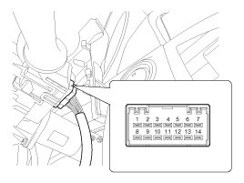
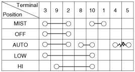
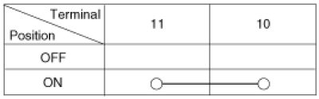
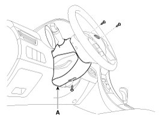
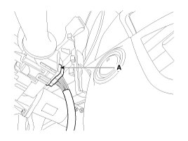
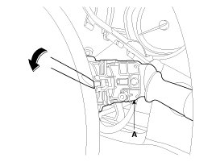
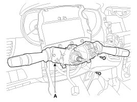

Wiper Switch: Service and Repair
Inspection
Check for continuity between the terminals while operating the wiper and washer switch. If it is not normal condition, replace wiper and wiper switch.

Wiper Switch

Washer Switch

Removal
1. Remove the steering column upper and lower shrouds (A) after removing 3 screws.

2. Disconnect the connector(A).

3. If necessary of removing the wiper & washer switch (A), release the lock of wiper switch using tool without removing the steering wheel and the clock spring.

4. Remove the steering wheel.
5. Remove the clock spring.
6. Remove the multifunction switch assembly(A) with 2 screws.

Installation
1. Install the multifunction switch after connecting the connector.
2. Install the clock spring and steering.
3. Install the upper and lower shroud.
4. Install the steering wheel.